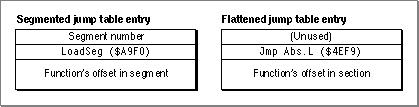

Legacy Document
Important: The information in this document is obsolete and should not be used for new development.
Important: The information in this document is obsolete and should not be used for new development.


Jump Table Conversion
When MakeFlat flattens jump table entries, it changes the addressing method from one that is segment oriented to one that is code section oriented. This involves removing the segment number (since it serves no purpose in a flat file), changing theLoadSeginstruction to aJmp Abs.Linstruction, and copying the routine's offset into the new entry. Then, MakeFlat generates a relocation instruction for each jump table entry that adds the code section's address to the routine's offset. Figure 9-6 compares the two jump table versions.Figure 9-6 Segmented versus flattened jump table entries
